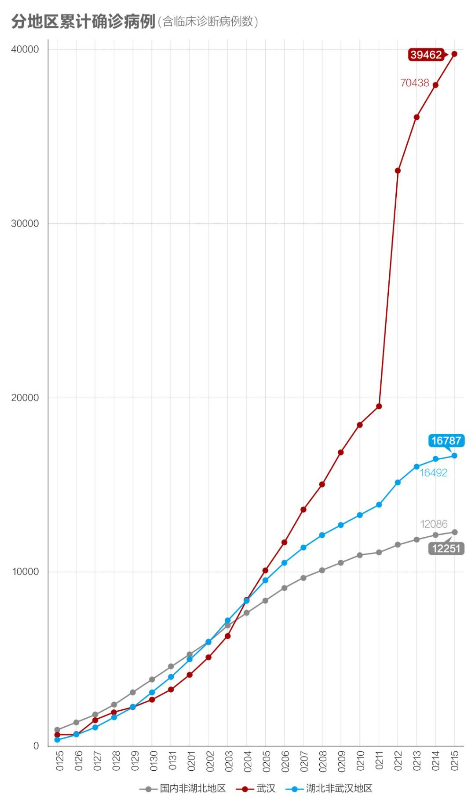
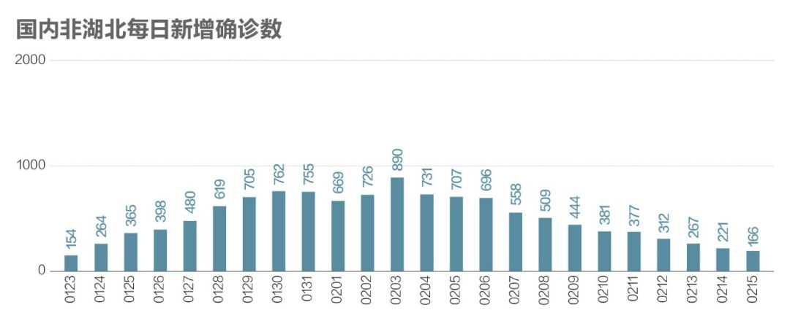
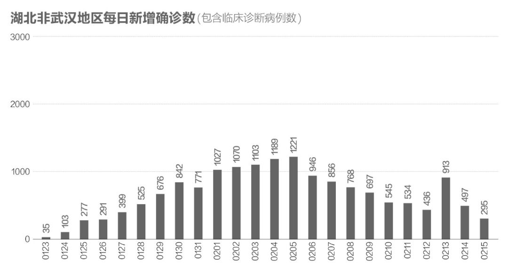
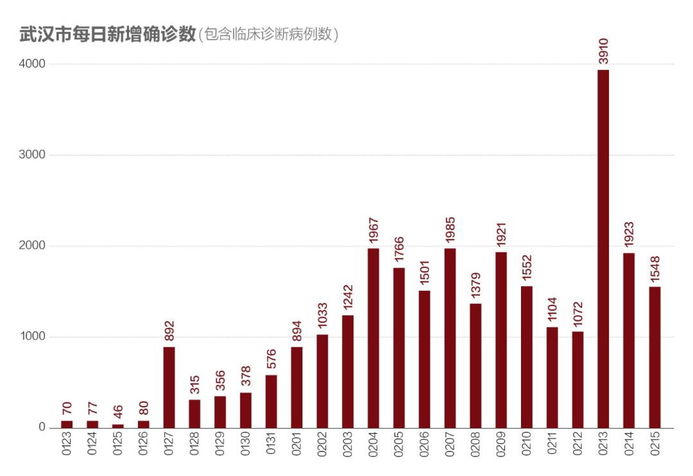
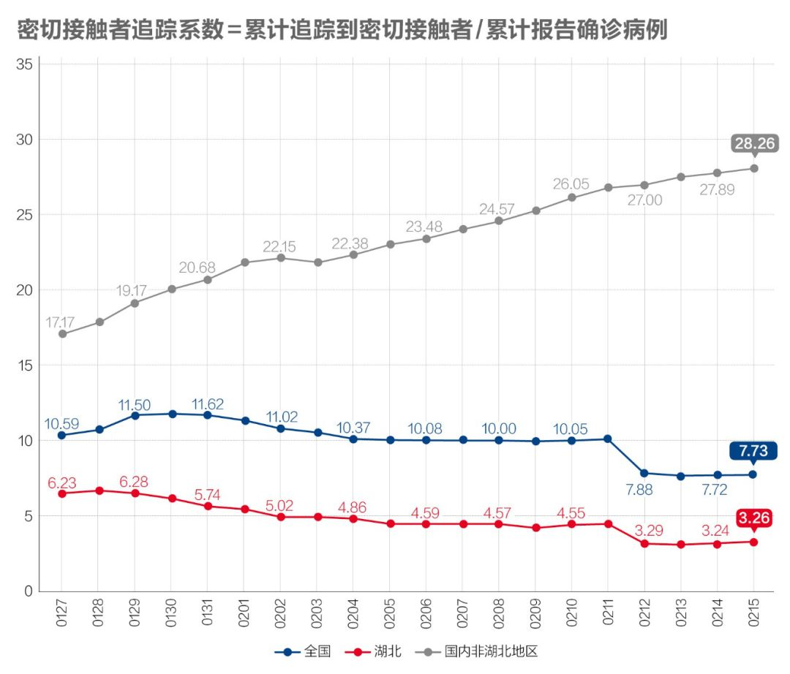
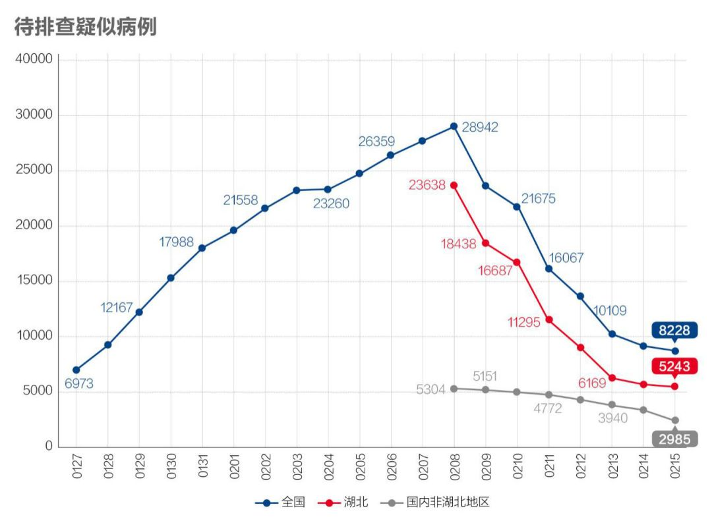
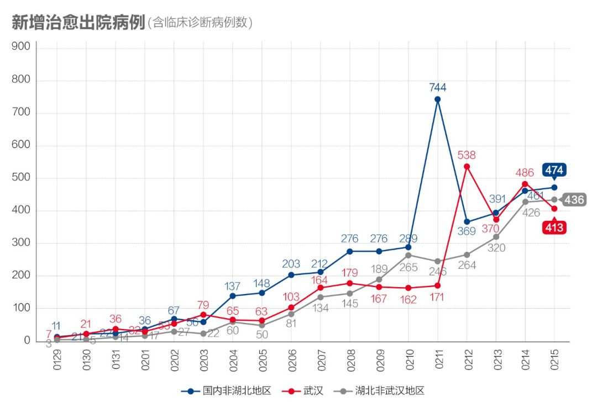
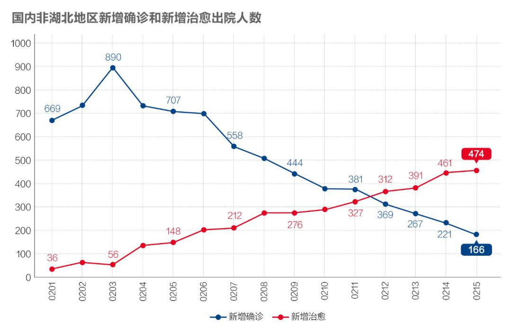

数说疫情0211：形势趋好，开始“测顶”
原文链接 备份链接 _ 今起武汉全市范围对居民小区实施封闭管理。小编身在武汉，响应号召，更要在家安心分析数据。武汉挺住！ _ 文 |《财经》数据研究员 徐进 图 | 视觉中心总监 黎立 编辑 | 谢丽容 1. 今日概况 2月10 …

文 | 《财经》数据研究员 徐进 图 |《财经》视觉中心
编辑 | 谢丽容
1. 全国累计确诊病例趋势
截至2月15日24:00，全国累计报告确诊新冠肺炎病例68500人。以下分地区情况。
图1

有朋友提醒小编：你不要盲目乐观，要知道R0值可是2-3，甚至5！小编问：所以呢？答曰：那意味着一个病人一天可以传染2-5人，太厉害了！想起印度国王和宰相下棋的故事了吧？让我们算算有多厉害。姑且按最低的2说，一天一人传两个，第二天就传四个……依次类推然后求和（指数数列求和公式）。如果从湖北那老两口和儿子12月23日开始咳嗽算起，到1月23日武汉封城，总的传染人数=3X2^-1=12884901887人。128.8亿！如果这是真的，我们还用紧张吗？早在大年三十，要么就是全世界所有人都已不在，要么就是所有活着的都被传染了两遍，怕是早都有抗体了吧。
小编不是学传染病学的，今天暂不讨论R0。只想先提醒一下，科学论断往往有前提假设。R0是在假定没有外界干预、交流无障碍而所有人又同样容易被感染的前提下得出的理论值。真实世界中这种前提从来没有存在过。所以真实R一般总会比R0低。
比如这次，1月23日之前我们至少还有医院，之后又有封城等包括追踪、隔离、大家戴口罩。真实R值会不断与R0拉开差距。所以对科学结论不能简单地“不明觉厉”，更不要过度地“细思恐极”。小编不预先选择悲观乐观，只是要看统计数字，相信真像藏在数据中，终究可以挖出来。
回到（图1），怎么看？累计数据往往能反映趋势。由图可见，1）尽管早期确有指数函数R值大于1的特征，大约在2月初就已经改变了性质，曲线由下凸改为上凸，完全看不出R值大于1了。还记得前面的“数说”说过“数学拐点在山腰”吗？可以合理推测在这一阶段两个特点：
1) 由于各项防控措施开始见效，实际R值已经从大于1切换成小于1了。
2) 国内非湖北地区和湖北非武汉地区的趋势曲线都已渐渐趋于平缓，见顶的迹象十分明显。
2. 新增病例：国内非湖北地区继续坚定下降，有望近日归零
图 2

国内非湖北新增病例下降至200人以内，我们推测本月20日前可以归零或基本归零。有很多网友担心这样的预测是否过于乐观，我们明天解释。
图 3

今天数据可以判定，湖北非武汉地区数据可以判定已消化完“堰塞湖”，重新走上每日新增病例下降的通道。
图 4

武汉数据看上去也很不错，按新口径连续两天下降。
3. 确诊病例增速：湖北非武汉地区继续降至接近2%，是个惊喜！国内非湖北地区增速继续下降至2%以下，大概率在2月20日前后归零
图 5

昨天按老口径计算湖北非武汉地区的病例增速降至接近2%，小编是不敢信的，也没有采纳。但今天新口径还是给出了这个惊喜。为湖北点赞！武汉新口径增速回落到4%附近，趋于健康。国内非湖北地区增速降至2%以内，有望率先归零。
4. 国内非湖北地区追踪力度加大，存量继续下降
图 6

湖北虽只是微弱回升却能表现出其对密切接触者追踪力度的提高。这对进一步控制疫情十分重要！国内非湖北地区对密切接触者追踪力度仍在加大。
图 7

此时湖北这一存量数据出现下降应该表明疫情减缓。国内非湖北地区继续下降降幅加大。
5. 疑似病例新增和存量双下滑
图8

湖北和非湖北地区都出现明显下降。
图9

湖北和国内非湖北地区下降。
6. 国内非湖北地区在院治疗人数见顶
图10

湖北在院治疗人数仍上升，国内非湖北地区减幅加大。
7. 新增治愈和病死率
图11

每日新增治愈国内非湖北、湖北非武汉地区继续上升。武汉回调。
图12

国内非湖北地区新增治愈与新增确诊人数已于2月12日成功越过“黄金交叉”点。意味着从这一天起，若不出意外，国内非湖北地区近10000例在院治疗者将开始逐步减少。在此之前，国内非湖北地区的另外两个重要存量“尚在接受医学观察人数”和“待排查疑似病例”皆已先后见顶下降。由于这三大存量（我们在数说疫情0211曾有阐述）都对应着巨大医疗资源和社会资源，它们的全面见顶下降，毫无疑问是关乎整个战局态势的“关键拐点”！
图13（湖北非武汉地区新增确诊和新增治愈人数）

湖北非武汉地区该数据也出现“黄金交叉”，可视为湖北非武汉地区的“关键拐点”，这一点的到来只比国内非湖北地区晚三天。
图14

病死率缓慢提升，总体态势正常。疫情暴发初期，每日新增病例猛增，有可能快过病死人数增长，因而导致病死率下降。经过一段时间滞后，随病程进展会带来死亡人数增加较快；与此同时，随着疫情得到控制，每日新增确诊病例出现明显下降，累计确诊病例增速放缓。这一快（分子），一慢（分母），会导致病死率缓慢回升。只有在疫情基本结束时，这个数值才会逼近“最终病死率”。
小结：湖北进一步化解“堰塞湖”，非武汉地区迅速重回下降轨道，武汉显现平稳态势。湖北非武汉地区越过抗疫战局“关键拐点”，可望由战略防守转为战略反攻。国内非湖北地区新增病例有望在2月20日前基本归零，也就是大家所期盼累计确诊病例见“顶”。
● 数说疫情
数说疫情0215：非湖北地区新增病例5日后有望清零，湖北进入总攻阶段
数说疫情0212：武汉形势扭转，湖北夺回主动权，全国继续向好

▲点击图片查看更多疫情报道
责编 | 黄端 duanhuang@caijing.com.cn
本文为《财经》杂志原创文章，未经授权不得转载或建立镜像。如需转载，请在文末留言申请并获取授权。
原文链接 备份链接 _ 今起武汉全市范围对居民小区实施封闭管理。小编身在武汉，响应号召，更要在家安心分析数据。武汉挺住！ _ 文 |《财经》数据研究员 徐进 图 | 视觉中心总监 黎立 编辑 | 谢丽容 1. 今日概况 2月10 …
原文链接 备份链接 文 |《财经》数据研究员 徐进 图 |《财经》视觉中心 编辑 | 谢丽容 1. 全国累计新增确诊病例 图1 由图可见，国内非湖北地区正趋于平缓。 2. 新增病例：国内非湖北地区继续坚定下降，有望近日归零 图2 国内 …
原文链接 备份链接 文 |《财经》数据研究员 徐进 图 |《财经》视觉中心 编辑 | 谢丽容 1. 今日概况： 根据国家卫健委数据，2月11日0—24时，31个省（自治区、直辖市）和新疆生产建设兵团报告，新增确诊病例2015例（湖 …
原文链接 备份链接 图/法新 文 |《财经》数据研究员 徐进 图 | 视觉中心总监 黎立 编辑 | 谢丽容 1. 今日概况： 2月9日0—24时，31个省（自治区、直辖市）和新疆生产建设兵团报告，新增确诊病例3062例（湖北2618 …
原文链接 备份链接 文 |《财经》数据研究员 徐进 图 |《财经》视觉中心 编辑 | 谢丽容 1. 新增病例：国内非湖北地区下降态势坚定 2月13日0—24时，全国新增确诊病例5090例，国内非湖北地区已经连续十天下降，超过两个平均潜伏 …